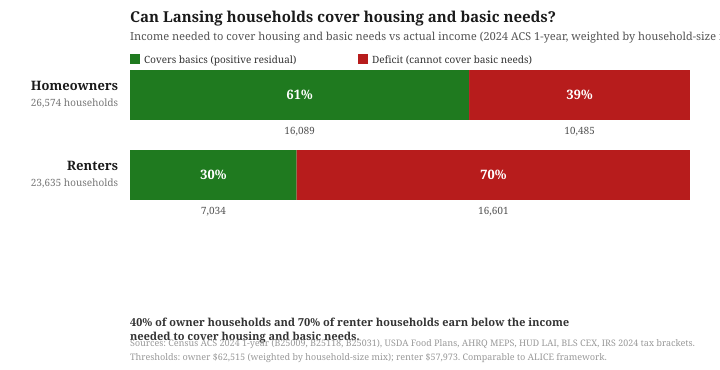

Lansing's Housing Crisis: Homeowners
LANSING, Mich. — Part 1 showed that most Lansing renter households do not earn enough to cover housing and basic needs. This post covers the homeowner side. Everything in this post comes from public data.
Key findings
- Lansing has the highest property tax rate in Ingham County: 62.6 mills, 12 to 24% higher than any surrounding jurisdiction.
- Low-value homes are over-assessed: homes that sold under $50,000 are assessed at 188% of their sale-price-based value, nearly twice what the statutory formula specifies. Homes over $200,000 are assessed at 91%. Owners of the lowest-value homes pay a higher effective rate.
- 40% of Lansing homeowner households do not earn enough to cover housing and basic needs, using the same residual-income measure as Part 1.
- Families with children face the tightest math: at median owner income ($75,176), a couple with no children barely clears the threshold for a median-priced home purchase. A family with one child falls into deficit. Childcare costs are the primary driver.
- The typical down payment is 5%, not 20%. HMDA data shows the median Lansing-area buyer put 5% down every year from 2018 to 2024. Only 30% of buyers put 20% or more.
- The median Lansing home sale price rose 37% in five years, from $99,000 in 2020 to $135,000 as of March 2025.
The tax burden
For City of Lansing homeowners in the Lansing School District, which covers 98% of residential parcels in the city, the total homestead millage rate is 62.6 mills. That is higher than any other jurisdiction in Ingham County.
| Jurisdiction | Predominant school district | Total mills (homestead) | Difference from Lansing |
|---|---|---|---|
| City of Lansing | Lansing (33020) | 62.6 | Highest in county |
| City of East Lansing | East Lansing (33010) | 55.8 | −6.8 mills |
| City of Mason | Mason (33130) | 53.6 | −9.0 mills |
| Meridian Charter Twp | Okemos (33170) | 51.6 | −11.0 mills |
| Lansing Charter Twp | Waverly (33215) | 51.7 | −10.9 mills |
| Delhi Charter Twp | Holt (33070) | 50.6 | −12.0 mills |
Source: 2025 Ingham County Apportionment Report, Part VI: Tax Rate Sheets. Total homestead millage rates. Each jurisdiction's rate reflects the school district that serves the largest share of its residential (class 401) parcels per City of Lansing 2025 FOIA parcel export; parcel data public at BS&A Online.
In plain terms: City of Lansing homeowners pay 12% more than East Lansing, 17% more than Mason, and 21% more than Meridian Charter Township for identical-value homes. Within Lansing itself, homeowners in Waverly or Holt school districts pay even more, up to 66.2 mills.
What does 62.6 mills mean in practice? Property tax adds roughly 28% on top of the mortgage payment at every price level. For a $150,000 home at current interest rates, that is $391 per month in property tax alone, pushing the total monthly housing cost to $1,389 before insurance, maintenance, or utilities.
| Home value | Monthly mortgage (7%, 30yr) | Monthly property tax | Total | Tax as % of payment |
|---|---|---|---|---|
| $75,000 | $499 | $196 | $695 | 28% |
| $100,000 | $665 | $261 | $926 | 28% |
| $150,000 | $998 | $391 | $1,389 | 28% |
| $200,000 | $1,331 | $522 | $1,852 | 28% |
Mortgage calculated at 7% fixed, 30-year term. Property tax = (market value / 2) x 62.6 / 1000 per MCL 211.27a.
Landlords pass property tax through in rent, but homeowners pay it directly as a bill twice a year, and in Lansing that bill is higher than in any other jurisdiction in the county.
The assessment problem
Michigan law requires that assessed value equal 50% of a property's true cash value (MCL 211.27a). If a home sells for $100,000, its assessed value should be approximately $50,000. In Lansing, this works correctly for middle- and upper-value homes, but breaks down at the bottom of the market where it matters most.
| Sale price range | Sales (2020-2025) | Avg sale price | Avg assessed value | Assessment ratio |
|---|---|---|---|---|
| Under $50,000 | 380 | $37,799 | $35,444 | 188% |
| $50,000 - $100,000 | 2,412 | $75,812 | $45,012 | 119% |
| $100,000 - $150,000 | 2,241 | $122,952 | $61,351 | 100% |
| $150,000 - $200,000 | 1,287 | $169,866 | $80,868 | 95% |
| $200,000+ | 908 | $264,418 | $120,556 | 91% |
Source: City of Lansing 2025 FOIA export (SALES.TXT, PARCEL MASTER LIST); parcel-level assessment and sale data publicly searchable at BS&A Online (City of Lansing). Assessment ratio = assessed value / (sale price / 2) x 100, where 100% means the assessment matches the sale price and above 100% means the home is over-assessed.
Homes that sold for under $50,000 are assessed at 188% of their sale-price-based SEV, nearly double what they should be. Homes that sold for over $200,000 are assessed at 91%, below what they should be. This is assessment regressivity: owners of lower-value homes pay a higher effective tax rate per dollar of home value than owners of higher-value homes. The pattern is well-documented nationally (Christopher Berry, "Reassessing the Property Tax," University of Chicago, 2021), but in a city with the highest mill rate in the county, the impact is amplified.
The housing stock
The average Lansing home is 80 years old. Housing of this age typically requires major systems work: roofing, electrical, plumbing, lead paint remediation, and foundation repair. For homes in the lowest price tier, where the assessment ratio is 188%, these repair costs are layered onto a property tax bill that already exceeds what owners of higher-value homes pay per dollar of home value.
The ownership gap
The median Lansing homeowner earns $75,176 per year, more than twice the median renter income of $36,114. The gap is largely compositional: 30% of owner households are married couples (two potential earners) compared to 10% of renters, while 52% of renter households are single adults.
The "20% down" rule is not how most Lansing-area buyers actually buy homes. According to HMDA data for Ingham County, the median down payment on an originated home purchase loan was 5% every year from 2018 through 2024, only 28-33% of buyers put 20% or more down, and roughly 40% put less than 5% down. And the price target has moved: the median Lansing home sale in the past 12 months (April 2024 through March 2025) was $135,000, up from $99,000 in 2020.
| Down payment | Share | Distribution |
|---|---|---|
| Less than 5% | 39.7% | |
| 5% to 10% | 18.8% | |
| 10% to 20% | 11.2% | |
| 20% or more | 30.3% |
Source: CFPB HMDA Data Browser, originated owner-occupied home purchase loans, Ingham County (FIPS 26065), 21,729 loans 2018-2024. Down payment = 100 minus loan-to-value ratio.
Using the same method as Part 1, the table below shows the income a Lansing household needs to cover basic needs (including housing), alongside how Lansing’s renter and owner households are distributed across compositions. Owner thresholds in the final column include the additional cost of buying at the median $135,000 home price (5% down, 30-year 7% mortgage, property tax, insurance, maintenance) rather than renting:
| Composition | Income needed (renting) | Income needed (buying median home) | Owner households |
|---|---|---|---|
| 1 adult, no children | $45,214 | $55,040 | 13,667 (51%) |
| 2 adults, no children (married) | $63,026 | $72,970 | 8,094 (30%) |
| 2 parents + 1–2 children | $73,937 – $82,763 | $82,790 – $88,780 | 3,259 (12%) |
| Single parent + 1–2 children | $75,916 – $95,596 | $83,917 – $104,860 | 1,554 (6%) |
"Buying median home" adds ownership costs (mortgage P+I $10,236 + PMI $770 + property tax $4,229 + insurance $1,400 + maintenance $1,350 = $17,985/year) and subtracts median rent ($11,976–$14,508/year depending on household size). Net: ownership adds ~$3,500–$7,400/year per household compared with renting at Lansing's median gross rent for the appropriate bedroom count. Composition counts from Census ACS B25115 2024 1-year. Thresholds use residual-income method; see methodology below.
The median Lansing owner income of $75,176 clears the single-adult threshold ($55,040) by a comfortable margin and barely clears the couple-no-kids threshold ($72,970). Owners with children at median income fall below the buying threshold: a two-parent family with one child needs $82,790, and a single-parent family with two children needs $104,860. For a prospective new buyer at median owner income, the purchase is feasible if there are no children; with children, the purchase squeezes the budget into deficit. The 13,667 single-adult owner households (51%) sit in the most comfortable affordability position; the 3,259 two-parent families with children (12%) face the tightest math at purchase.
The table above shows one snapshot: new buyers at median price, at the median owner income. But Lansing's actual owner households vary by both income and household size. Weighting the per-household-size thresholds by the actual mix of Lansing household sizes in each tenure group produces the overall picture below:

10,485 Lansing homeowner households (40% of owners) have household income below what they need to cover housing and basic needs. This is substantially higher than the federal 30% cost-burden standard suggests, because that standard stops at housing and ignores the car, groceries, doctor, and electric bill. Renters are more stressed (70% below threshold), but 2 in 5 Lansing homeowner households also cannot cover basic needs. The United Way ALICE framework produces a comparable estimate: 41% of Michigan households (and 41% across the six-county region that includes Ingham) fell below the ALICE Threshold in 2023, with the city of Lansing running higher than the broader regional average.
![Stacked bar chart of Lansing homeowner households across 11 income buckets, segmented by household composition (single adult, couple without children, two parents with children, single parent with children). Homeowner composition shifts substantially by income: single-adult households concentrate in middle income buckets, while couples without children and two-parent families with children dominate upper income buckets. Source: Census ACS B25118 income totals, composition shares from PUMS housing records for Lansing area PUMA 01801, 2024 1-year.](../img/housing-homeowner-income.svg)
What the numbers mean together
Part 1 showed that a single adult needs $45,214 a year to cover basic needs in Lansing, and a single-parent family with two children needs up to $95,596. Part 2 shows that City of Lansing homeowners pay the highest tax rate in Ingham County, on housing stock that averages 80 years old, under an assessment system that charges owners of low-value homes a higher effective rate than owners of high-value homes. Buying at the median $135,000 home price raises each composition's income threshold by roughly $7,000–$10,000 per year. The $6,750 down payment plus $4,000–5,000 closing costs is the price of admission; sustaining that ownership on top of basic needs is a separate test that the median owner income passes for single adults and couples without children, but fails for households with children.
Renters do not earn enough to cover basic needs, and the wall to ownership is the cash savings they cannot accumulate while running a deficit. Homeowners who cleared that wall then pay the highest tax rate in the county on aging, regressively-assessed homes. Who designed a housing market where renters cannot save to become owners, and owners pay more per dollar of home value the less their home is worth?
Methodology and data vintages
Numbers in this post come from multiple sources with different release dates. Income and household composition use the 2024 1-year American Community Survey for the City of Lansing (published September 2025). Median sale price is computed from 1,133 arms-length City of Lansing residential sales (searchable at BS&A Online) during the twelve months from April 2024 through March 2025. Mill rates are from the 2025 Ingham County Apportionment Report. Mortgage rate of 7% reflects the Freddie Mac PMMS weekly average for 2025. Basic-needs cost components come from federal authoritative sources: food from the USDA Low-Cost Food Plan (October 2024), medical from AHRQ MEPS (Midwest region), transportation from the HUD Location Affordability Index for Lansing city census tracts, childcare from Michigan DHHS Ingham County 2024 market rate survey, internet/mobile from the BLS Consumer Expenditure Survey (2023), and a standard 10–15% miscellaneous buffer for other necessities. Home insurance reflects the Michigan HO-3 state average (NAIC). Taxes model federal income tax (IRS 2024 brackets, standard deduction, Child Tax Credit, EITC) plus Michigan state (4.25%), Lansing city (1.0%), and FICA (7.65%).
The income thresholds in the composition table are computed per composition. The stacked income histogram uses Census B25118 income totals for the City of Lansing and composition shares derived from ACS PUMS 2024 1-year microdata for Public Use Microdata Area 01801 (southern and eastern Ingham County, the closest geographic proxy to the City of Lansing available in PUMS). Non-housing basic needs are identical for renters and owners (food, transportation, medical, childcare, internet, other). Only housing costs differ: renters use ACS Lansing median gross rent by bedroom, owners use new-buyer costs at the median $135,000 home price.
Sources
City of Lansing 2025 FOIA export (NAMES.TXT, PARCEL MASTER LIST.CSV, SALES.TXT, VALUES.TXT): 38,721 class-401 residential parcels, 7,228 sales since 2020. Census ACS B25119 (owner/renter income, City of Lansing, 2024). MCL 211.27a (State Equalized Value). 2025 Ingham County Apportionment Report, Part VI: Tax Rate Sheets (homestead millage rates by jurisdiction × school district). Predominant school district per jurisdiction derived from residential (class 401) parcel counts in City of Lansing 2025 FOIA export. WILX (Feb 26, 2026, tagged properties). Assessment ratio analysis from FOIA parcel and sales data, 7,228 arms-length residential sales 2020-2025. Berry (2021), "Reassessing the Property Tax," University of Chicago Harris School of Public Policy.